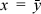
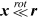

This appendix shows plots of a number of discrete functions. They were produced by Mathematica. For each function, two plots are shown: one for a word size of three bits and the other for a word size of five bits. This material was suggested by Guy Steele.
This section includes 3D plots of and(x, y), or(x, y), and xor(x, y) as functions of integers x and y, in Figures C–1, C–2, and C–3, respectively.
FIGURE C–1. Plots of the logical and function.
FIGURE C–2. Plots of the logical or function.
In Figure C–3, almost half of the points are hidden behind the diagonal plane .
FIGURE C–3. Plots of the logical exclusive or function.
For and(x, y) (Figure C–1), a certain self-similar, or fractal, pattern of triangles is apparent. If the figure is viewed straight on parallel to the y-axis and taken to the limit for large integers, the appearance would be as shown in Figure C–4.
FIGURE C–4. Self-similar pattern made by and(x, y).
This is much like the Sierpinski triangle [Sagan], except Figure C–4 uses right triangles whereas Sierpinski used equilateral triangles. In Figure C–3, a pattern along the slanted plane is evident that is precisely the Sierpinski triangle if carried to the limit.
This section includes 3D plots of addition, subtraction, and three forms of multiplication of unsigned numbers, using “computer arithmetic,” in Figures C–5 through C–9. Note that for the plot of the addition operation, the origin is the far-left corner.
FIGURE C–5. Plots of x + y (computer arithmetic).
FIGURE C–6. Plots of x – y (computer arithmetic).
In Figure C–7, the vertical scales are compressed; the highest peaks in the left figure are of height 7·7 = 49.
FIGURE C–7. Plots of the unsigned product of x and y.
FIGURE C–8. Plots of the low-order half of the unsigned product of x and y.
FIGURE C–9. Plots of the high-order half of the unsigned product of x and y.
This section includes 3D plots of the quotient, remainder, greatest common divisor, and least common multiple functions of nonnegative integers x and y, in Figures C–10, C–11, C–12, and C–13, respectively. Note that in Figure C–10, the origin is the rightmost corner.
FIGURE C–10. Plots of the integer quotient function x÷y.
FIGURE C–11. Plots of the remainder function rem(x, y).
FIGURE C–12. Plots of the greatest common divisor function GCD(x, y).
In Figure C–13, the vertical scales are compressed; the highest peaks in the left figure are of height LCM(6, 7) = 42.
FIGURE C–13. Plots of the least common multiple function LCM(x, y).
This section includes 3D plots of compress(x, m), SAG(x, m), and rotate left  as functions of integers x, m, and r, in Figures C–14, C–15, and C–16, respectively
For compress and SAG, m is a mask. For compress, bits of x selected by m are extracted and compressed to the right, with 0-fill on the left. For SAG, bits of x selected by m are compressed to the left, and the unselected bits are compressed to the right.
FIGURE C–14. Plots of the generalized extract, or compress(x, m) function.
FIGURE C–15. Plots of the sheep and goats function SAG(x, m).
FIGURE C–16. Plots of the rotate left function
Figures C–17 through C–21 show 2D plots of some unary functions on bit strings that are reinterpreted as functions on integers. Like the 3D plots, these were also produced by Mathematica. For most functions, two plots are shown: one for a word size of four bits and the other for a word size of seven bits.
FIGURE C–17. Plots of the Gray code function.
FIGURE C–18. Plots of the inverse Gray code function.
FIGURE C–19. Plots of the ruler function (number of trailing zeros).
FIGURE C–20. Plots of the population count function (number of 1-bits).
FIGURE C–21. Plots of the bit reversal function.
“Gray code function” refers to a function that maps an integer that represents a displacement or rotation amount to the Gray encoding for that displacement or rotation amount. The inverse Gray code function maps a Gray encoding to a displacement or rotation amount. See Figure 13–1 on page 313.
Figure C–22 shows what happens to a deck of 16 cards, numbered 0 to 15, after one, two, and three outer perfect shuffles (in which the first and last cards do not move). The x coordinate is the original position of a card, and the y coordinate is the final position of that card after one, two, or three shuffles. Figure C–23 is the same for one, two, and three perfect inner shuffles. Figures C–24 and C–25 are for the inverse operations.
FIGURE C–22. Plots of the outer perfect shuffle function.
FIGURE C–23. Plots of the inner perfect shuffle function.
FIGURE C–24. Plots of the outer perfect unshuffle function.
FIGURE C–25. Plots of the inner perfect unshuffle function.
Figures C–26 and C–27 show the mapping that results from shuffling the bits of an integer of four and eight bits in length. Informally,
shuffleBits(x) = asInteger(shuffle(bits(x)))
FIGURE C–26. Plots of the outer perfect shuffle bits function.
FIGURE C–27. Plots of the inner perfect shuffle bits function.